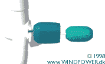
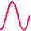

Indirect
Grid Connection of Wind Turbines





Generating
Alternating Current (AC)
at Variable Frequency
Most wind turbines run at almost constant speed with direct grid
connection. With indirect grid connection, however, the
wind turbine generator runs in its own, separate mini AC-grid,
as illustrated in the graphic. This grid is controlled electronically
(using an inverter), so that the frequency of the alternating
current in the stator of the
generator may be varied. In this way it is possible to run the
turbine at variable rotational speed. Thus the turbine will generate
alternating current at exactly the variable frequency applied
to the stator.
 The generator may be either a synchronous
generator or an asynchronous generator,
and the turbine may have a gearbox,
as in the image above, or run without a gearbox if the generator
has many poles, as explained on the next page.
The generator may be either a synchronous
generator or an asynchronous generator,
and the turbine may have a gearbox,
as in the image above, or run without a gearbox if the generator
has many poles, as explained on the next page.
Conversion
to Direct Current (DC)
AC current with a variable frequency cannot be handled by the
public electrical grid. We therefore start by rectifying it,
i.e. we convert it into direct current, DC. The conversion from
variable frequency AC to DC can be done using thyristors or large
power transistors.
Conversion
to Fixed Frequency AC
We then convert the (fluctuating) direct current to an alternating
current (using an inverter) with exactly the same frequency as
the public electrical grid. This conversion to AC in the inverter
can also be done using either thyristors or transistors.
 Thyristors or power transistors are large
semiconductor switches that operate without mechanical parts.
The kind of alternating current one gets out of an inverter looks
quite ugly at first sight - nothing like the smooth sinusoidal
curve we learned about when studying alternating
current. Instead, we get a series of sudden jumps in the
voltage and current, as you saw in the animation above.
Thyristors or power transistors are large
semiconductor switches that operate without mechanical parts.
The kind of alternating current one gets out of an inverter looks
quite ugly at first sight - nothing like the smooth sinusoidal
curve we learned about when studying alternating
current. Instead, we get a series of sudden jumps in the
voltage and current, as you saw in the animation above.
Filtering
the AC
The rectangular shaped waves can be smoothed out, however, using
appropriate inductances and capacitors, in a so-called AC filter
mechanism. The somewhat jagged appearance of the voltage does
not disappear completely, however, as explained below.
Advantages
of Indirect Grid Connection:
Variable Speed
The advantage of indirect grid connection is that it is possible
to run the wind turbine at variable speed.
 The primary advantage is that gusts of wind
can be allowed to make the rotor turn faster, thus storing part
of the excess energy as rotational energy until the gust is over.
Obviously, this requires an intelligent control strategy, since
we have to be able to differentiate between gusts and higher
wind speed in general. Thus it is possible to reduce the peak
torque (reducing wear on the gearbox and generator), and we may
also reduce the fatigue
loads on the tower and rotor blades.
The primary advantage is that gusts of wind
can be allowed to make the rotor turn faster, thus storing part
of the excess energy as rotational energy until the gust is over.
Obviously, this requires an intelligent control strategy, since
we have to be able to differentiate between gusts and higher
wind speed in general. Thus it is possible to reduce the peak
torque (reducing wear on the gearbox and generator), and we may
also reduce the fatigue
loads on the tower and rotor blades.
 The secondary advantage is that with power
electronics one may control reactive power (i.e. the phase shifting
of current relative to voltage in the AC grid), so as to improve
the power quality in the electrical grid. This may be useful,
particularly if a turbine is running on a weak electrical grid.
The secondary advantage is that with power
electronics one may control reactive power (i.e. the phase shifting
of current relative to voltage in the AC grid), so as to improve
the power quality in the electrical grid. This may be useful,
particularly if a turbine is running on a weak electrical grid.
 Theoretically, variable speed may also give
a slight advantage in terms of annual production, since it is
possible to run the machine at an optimal rotational speed, depending
on the wind speed. From an economic point of view that advantage
is so small, however, that it is hardly worth mentioning.
Theoretically, variable speed may also give
a slight advantage in terms of annual production, since it is
possible to run the machine at an optimal rotational speed, depending
on the wind speed. From an economic point of view that advantage
is so small, however, that it is hardly worth mentioning.
Disadvantages
of Indirect Grid Connection
The basic disadvantage of indirect grid connection is cost. As
we just learned, the turbine will need a rectifier and two inverters,
one to control the stator current, and another to generate the
output current. Presently, it seems that the cost of power electronics
exceeds the gains to be made in building lighter turbines, but
that may change as the cost of power electronics decreases. Looking
at operating statistics from wind turbines using power electronics
(published by the the German ISET Institute), it also seems that
availability rates for these machines tend to be somewhat lower
than conventional machines, due to failures in the power electronics.
 Other disadvantages are the energy lost in
the AC-DC-AC conversion process, and the fact that power electronics
may introduce harmonic distortion of the alternating current
in the electrical grid, thus reducing power quality. The problem
of harmonic distortion arises because the filtering process mentioned
above is not perfect, and it may leave some "overtones"
(multiples of the grid frequency) in the output current.
Other disadvantages are the energy lost in
the AC-DC-AC conversion process, and the fact that power electronics
may introduce harmonic distortion of the alternating current
in the electrical grid, thus reducing power quality. The problem
of harmonic distortion arises because the filtering process mentioned
above is not perfect, and it may leave some "overtones"
(multiples of the grid frequency) in the output current.
© Copyright 1998 Soren Krohn. All rights reserved.
Updated 6 August 2000
http://www.windpower.org/tour/wtrb/indirect.htm